01 · Consulta em 1 minuto
Guia rápido
O essencial para sair dirigindo agora. Para detalhes, use as abas ao lado.
01 Antes de sair
- Ajuste banco, retrovisores e, se preciso, o volante (alavanca sob a coluna de direção).
- Cinto de segurança.
- Câmbio em ponto morto e freio de estacionamento acionado.
- Pise embreagem e freio até o fim, dê a partida com a chave.
- Confira se as luzes de advertência apagam depois de ligar.
- Engate a 1ª, solte o freio de mão e siga.
02 Conectar o celular (Android Auto sem fio)
- Carro parado. Ligue Bluetooth e Wi-Fi do celular.
- Toque no widget Android Auto/CarPlay na tela inicial da central.
- Se não abrir sozinho: Todos os menus → Ajustes → Conexão do dispositivo → Projeção do telefone → Adicionar novo.
- Confirme o código de pareamento igual nas duas telas.
- Autorize contatos, chamadas e notificações no celular.
- Abra Google Maps ou Waze pela tela do carro.
03 Volante em 10 segundos
| Esquerda | Volume, MODE, faixa/estação, telefone, voz |
| Direita | Telas do painel (▲▼ OK) e piloto automático/limitador |
04 Ar-condicionado — gelar rápido
Motor ligado → A/C ligado → temperatura fria → ventilador médio/alto → recirculação por alguns minutos.
05 Ao devolver o carro
- Pare, ponto morto, freio de mão firme, desligue o motor.
- Apague seu celular da central: Ajustes → Conexão do dispositivo → excluir dispositivo.
- Confira que contatos e histórico de chamadas não ficaram vinculados.
- Retire objetos pessoais e cabos.
02 · Comandos ao alcance do polegar
Volante
Botões multifuncionais dos dois lados, mais as alavancas de seta e limpador.
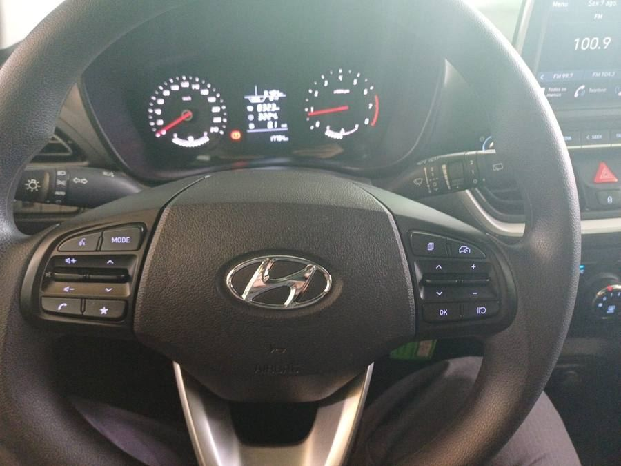
A Lado esquerdo — som, telefone e voz
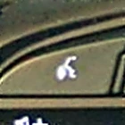 Voz | Aciona comando de voz. Com Android Auto, chama o Google Assistente. |
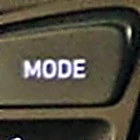 MODE | Alterna fonte de áudio (rádio ↔ mídia). |
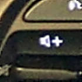 VOL + | Aumenta o volume. |
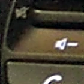 VOL − | Diminui o volume. |
▲ | Rádio: estação memorizada seguinte. Mídia: próxima faixa. Segurar: avança. |
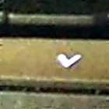 ▼ | Rádio: estação memorizada anterior. Mídia: faixa anterior. Segurar: retrocede. |
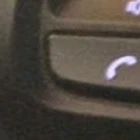 Telefone | Atende, encerra ou acessa chamada Bluetooth. |
★ | Atalho configurável da central. |
FOTOS DOS BOTÕES · VOLANTE DESTE HB20 COMFORT
B Lado direito — painel e velocidade
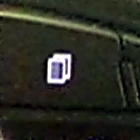 Páginas | Alterna as telas do computador de bordo no painel. |
▲ | Sobe nas informações exibidas na tela do painel. |
▼ | Desce nas informações exibidas na tela do painel. |
OK | Confirma seleção. Em algumas telas, segurar zera o campo (ex: consumo médio). |
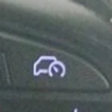 Assistência | Ativa piloto automático ou limitador de velocidade. |
+ | Aumenta a velocidade programada. |
− | Diminui a velocidade programada. |
Retomar/cancelar | Pausa ou retoma a velocidade ajustada. |
FOTOS DOS BOTÕES · VOLANTE DESTE HB20 COMFORT
C Piloto automático — passo a passo
- Dirija acima de 40 km/h (velocidade mínima de ativação).
- Chegue à velocidade desejada e acione o botão de assistência
- Confirme no painel que a velocidade foi salva.
+aumenta,-diminui.- Pisar no freio cancela temporariamente o controle.
D Limitador de velocidade
Programa uma velocidade máxima de referência. Pressione e segure o botão de assistência até entrar no modo de limite, depois ajuste com + / -. Útil em vias urbanas com fiscalização.
E Alavanca esquerda — setas e faróis
- Para cima/baixo: setas de direção.
- Seletor rotativo na ponta: liga faróis, lanternas, ou modo AUTO (acendimento por sensor crepuscular).
- Puxar a alavanca em direção ao volante: farol alto / lampejo.
F Alavanca direita — limpadores
| MIST | Uma passada única do limpador. |
| OFF | Desligado. |
| INT | Intermitente. |
| LO / HI | Velocidade baixa / alta contínua. |
| Puxar | Aciona o esguicho do lavador do para-brisa. |
| Seletor na ponta | Limpador do vidro traseiro (hatch). |
03 · Leitura do quadro de instrumentos
Painel de instrumentos
Velocímetro, conta-giros, tela de informações e luzes de advertência.
A O que o painel mostra
- Velocímetro (esquerda) e conta-giros/tacômetro (direita).
- Tela central com hodômetro, consumo, autonomia, avisos e status do piloto automático/limitador.
- Indicadores de combustível e temperatura.
Navegue pelas telas com os botões do lado direito do volante: ícone de páginas, setas ▲▼ e OK.
B Luzes de advertência — o que fazer
| (!) vermelho | Normal com freio de mão puxado. Se persistir depois de soltar, pode ser fluido de freio baixo — pare e avise a locadora. |
| Óleo vermelho | Se ficar aceso com motor ligado: pare em local seguro, desligue e acione assistência. |
| Bateria vermelha | Acesa com motor funcionando pode indicar falha no alternador/carga. |
| Temperatura | Sinal de superaquecimento: pare, desligue o A/C, não abra o reservatório quente. |
| ABS | Pode acender no autoteste inicial. Persistente = possível falha (o freio convencional segue funcionando). |
| ESC/estabilidade | Piscando = sistema atuando. Fixa = possível falha ou sistema desativado. |
C Chave e partida segura
- Freio de estacionamento acionado.
- Câmbio em ponto morto.
- Embreagem totalmente pressionada — é pré-requisito de segurança para a partida em modelos manuais.
- Mantenha o freio pressionado, gire a chave.
- Solte a chave assim que o motor pegar.
Evite acelerar durante a partida ou manter a chave em START com o motor já funcionando.
D Assistente de partida em rampa (HAC)
Equipamento de série neste Comfort. Ao parar em subida e transferir o pé do freio para acelerador/embreagem, o sistema segura brevemente a pressão dos freios para reduzir o recuo.
04 · blueMedia 8"
Central multimídia
Tela touchscreen, botões físicos e conexão do celular.
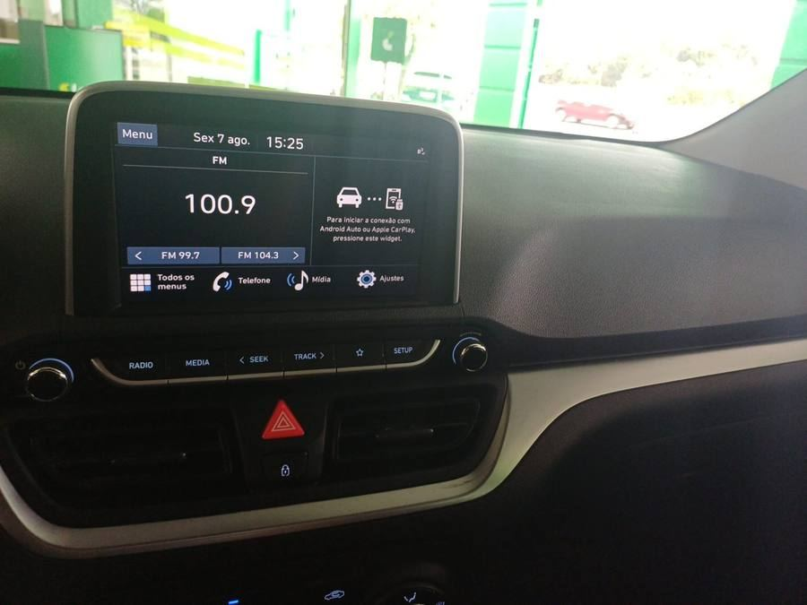
A Botões físicos
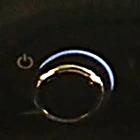 Giratório esq. | Liga/desliga o áudio e controla o volume. |
RADIO | Abre o rádio FM. |
MEDIA | Abre mídia do telefone/USB. |
SEEK | Estação anterior/próxima. Segurar: busca. |
TRACK | Faixa anterior/próxima. Segurar: avança. |
★ | Atalho configurável. |
SETUP | Abre as configurações. |
Giratório dir. | Sintonia/navegação conforme a tela. |
FOTOS DOS BOTÕES · CENTRAL blueMedia DESTE HB20 COMFORT
B Bluetooth × Android Auto — a diferença que importa
Bluetooth serve para chamadas, música e contatos — não projeta o Google Maps na tela sozinho.
Android Auto é a projeção integrada: Google Maps, Waze, Spotify, YouTube Music, chamadas, mensagens e Google Assistente aparecem na tela do carro.
C Conectar Android Auto sem fio — passo a passo completo
No celular, antes de começar
- Bluetooth ligado
- Wi-Fi ligado
- App Android Auto instalado e habilitado
Primeira conexão
- Pare o carro em local seguro e ligue a central.
- Toque no widget Android Auto / Apple CarPlay na tela inicial.
- Se não abrir: Todos os menus → Ajustes → Conexão do dispositivo → Projeção do telefone.
- Toque em Adicionar novo.
- No celular, aceite o nome do sistema Hyundai na lista Bluetooth.
- Confirme que o código exibido no celular é igual ao da central.
- Aceite as permissões (contatos, notificações, apps).
- Aguarde o ícone do Android Auto aparecer na tela.
Reconexões futuras
Basta entrar no carro com Bluetooth e Wi-Fi ligados — a conexão volta a acontecer automaticamente.
D Solução de problemas
| BT conecta, Maps não abre | Confira Wi-Fi do celular → Projeção do telefone → confirme Android Auto habilitado. |
| Celular aparece mas não inicia | Remova o aparelho da central, "esqueça" o Hyundai no BT do celular, refaça o pareamento. |
| Vários telefones antigos | Comum em carro de locadora. Remova apenas o seu registro; evite apagar o que não é seu. |
| Conexão instável | Aproxime o celular do console, desligue hotspot/VPN temporariamente, reinicie Wi-Fi/BT. |
| Maps sem internet | Android Auto depende dos dados do celular (4G/5G) para navegação online. |
E USB e chamadas no volante
A central tem entrada USB tipo A, usada para mídia e, se for o caso, conexão com fio. Use cabo de dados (não apenas de carga) se optar por Android Auto via cabo.
Com o telefone pareado, o botão de telefone no volante atende e encerra chamadas; volume e MODE controlam o áudio sem precisar pegar o celular.
F Manual da central pelo próprio carro
A tela tem um manual completo embutido: Todos os menus → Ajustes → Geral → Manual do usuário na rede mostra um código QR — leia com o celular e abre o manual da central no navegador.
G Ajustes úteis para quem está de passagem
| Favoritos | Todos os menus → Favoritos → Adicionar. Até 24 atalhos para as funções que você mais usa. |
| Wi-Fi do Android Auto sem fio | Ajustes → Wi-Fi → Gerar nova senha, se a conexão sem fio estiver instável. |
| Botão ★ (personalizado) | Ajustes → Botão → escolha o que o botão de atalho no painel e o ★ do volante abrem. |
| Brilho da tela | Ajustes → Exibição → Modo automático/diurno/noturno. |
| Memo de voz | Todos os menus → Memo de voz — grava pelo microfone do carro e pode salvar num pendrive USB. |
05 · No dia a dia
Condução, clima e equipamentos
Câmbio manual, ar-condicionado, segurança de fábrica e itens práticos.
A Câmbio manual — lembretes
- 1ª marcha para sair; ré somente com o carro completamente parado.
- Embreagem até o fim para trocar de marcha; libere de forma progressiva.
- Não dirija com o pé apoiado na embreagem, nem segure o carro em subida "no ponto" dela.
- Em descida longa, use marcha compatível e freio-motor.
B Subida e descida
Subida
- Pare com o freio, engate a 1ª.
- Ao sair, transfira progressivamente para acelerador/embreagem — o HAC pode segurar o carro brevemente.
- Não fique parado "queimando embreagem" por muito tempo.
Descida
- Marcha compatível com a velocidade, use freio-motor.
- Evite descer em ponto morto ou com a embreagem pressionada sem necessidade.
C Ar-condicionado manual
Gelar rápido
Motor ligado → A/C ligado → temperatura fria → ventilador médio/alto → recirculação alguns minutos → depois volte para entrada de ar externo.
Desembaçar o para-brisa
Direcione o fluxo ao para-brisa → A/C ligado → entrada de ar externo → aumente a ventilação.
D Segurança de fábrica desta versão
Em frenagem de emergência: pressione o pedal com firmeza e não "bombeie" o freio — o ABS pode causar leve pulsação no pedal, isso é normal.
E Combustível, pneus e porta-malas
| Combustível | Motor Flex — aceita etanol, gasolina ou mistura dos dois. |
| Pneus | 185/60 R15. Confira a pressão correta na etiqueta do próprio carro (coluna/porta do motorista), não em valor genérico. |
| Porta-malas | 300 L em configuração normal; até 930 L com banco traseiro rebatido. |
F Funções que este Comfort NÃO tem de série
O Manual do Proprietário cobre toda a família HB20 — algo aparecer nele não significa que está no seu carro. Não presuma, nesta versão:
G Bluelink em carro alugado
O catálogo lista Bluelink para a linha, mas não é recomendável cadastrar o veículo alugado na sua conta pessoal sem autorização da locadora — isso envolve dados de localização, uso e comandos remotos vinculados ao carro.
O serviço também costuma ser gratuito só por um período promocional definido na proposta comercial do carro, podendo virar assinatura paga depois — mais um motivo para não vincular sua conta em um carro alugado.
H Cronograma de manutenção (referência do proprietário)
Não se aplica a quem está com o carro alugado — a locadora é responsável pelas revisões. Fica aqui como referência, caso você tenha um HB20 próprio: revisão a cada 10.000 km ou 12 meses (o que ocorrer primeiro), 1ª revisão com mão de obra gratuita.
| 1ª revisão | R$ 414,79 |
| 2ª revisão | R$ 770,69 |
| 3ª revisão | R$ 767,59 |
| 4ª revisão | R$ 1.075,91 |
| 5ª revisão | R$ 728,39 |
| 6ª revisão | R$ 966,69 |
Valores da tabela oficial para o HB20 1.0 MPI (motor Flex) 2025-2027, válidos até 31/12/2026. Confirme o valor atual com a concessionária antes de agendar.
06 · Marque conforme for fazendo
Checklists
Retirada, estrada, devolução e o que fazer em imprevistos.
01 Retirada do carro na locadora
02 Antes de pegar estrada
03 Devolução
04 Luz vermelha acendeu em movimento
- Reduza a velocidade e procure local seguro.
- Pare e avalie o símbolo.
- Em dúvida, não continue a viagem.
- Contate a locadora/assistência.
Atenção redobrada para óleo, temperatura, freios e bateria. Em carro alugado, não faça reparos por conta própria sem autorização.
05 Pneu furado ou pane
- Pare em local seguro e ligue o pisca-alerta.
- Mantenha os ocupantes em local protegido, quando possível.
- Consulte o contrato/telefone da assistência da locadora.
- Não autorize oficina externa sem verificar as regras da locadora.
- Fotografe a situação.
07 · Rastreabilidade
Equipamentos e fontes
O que foi confirmado para esta versão específica, e onde.
A Resumo dos equipamentos confirmados
| Motor | Kappa 1.0 12V Flex |
| Câmbio | Manual, 5 marchas |
| Central | blueMedia 8" touchscreen |
| Android Auto | SEM FIO |
| Apple CarPlay | SEM FIO |
| Bluetooth / voz | SIM |
| Piloto automático | SIM |
| Limitador de velocidade | SIM |
| HAC (partida em rampa) | SIM |
| ABS + EBD / ESP + TCS / ESS | SIM |
| Airbags | 6 |
| ISOFIX + top tether | SIM |
| Ar-condicionado | Manual |
| Direção | Elétrica progressiva |
| Chave | Canivete com telecomando |
| USB | Tipo A |
| Pneus | 185/60 R15 |
| Porta-malas | 300 L (930 L banco rebatido) |
| Bluelink | Listado na linha, sujeito a ativação |
B Fontes oficiais consultadas
Catálogo oficial — HB20 Comfort 2025/2026
Hyundai Motor Brasil
Catalogo_Digital_Novo_HB20_Comfort_25_26.pdf
Manual do Proprietário — família HB20
Hyundai Motor Brasil · revisão A1SO-PB2603A (impressão mar/2026)
MP_HB20_A1SO-PB2603A_site.pdf
Manual web completo da central — blueMedia (DA_GEN2_V)
Hyundai Motor Brasil · 43 páginas — visão geral, ajustes, rádio, mídia, telefone e projeção do celular
ownersmanual.hyundai.com — Índice do manual da central
Página específica de projeção do telefone: webmanual.hyundai.com — Como usar a projeção do telefone
Página oficial do HB20
hyundai.com.br/veiculos/novo-hyundai-hb20.html
Manual Bluelink 2026
Hyundai Motor Brasil
Manual_Bluelink_2026.pdf
Plano de manutenção oficial
Hyundai Motor Brasil · válido até 31/12/2026
Plano de manutenção — HB20 1.0 MPI (PDF)
C Observação final de segurança
Este guia foi preparado especificamente para o HB20 10M Comfort, fabricação 2025/modelo 2026, com base no CRLV apresentado, nas fotos do veículo e nas fontes oficiais acima.
O Manual do Proprietário oficial prevalece sempre que houver divergência. O manual geral cobre várias versões e traz itens "se equipado" — não presuma que uma função de outra versão está no seu Comfort.
Para carro alugado, prevalecem sempre, nesta ordem: instruções da locadora, condições do contrato, avisos exibidos no próprio veículo e legislação de trânsito.